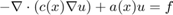
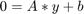

Contents
Elliptic
This class implements a linear elliptic PDE of the form
Au = f
plus Dirichlet and/or Robin boundary conditions.
classdef Elliptic < pde
This class implements a linear elliptic PDE

plus Dirichlet and/or Robin boundary conditions.
Inheritance
elliptic < pde
Protected Methods
We implement df and overwrite jacobian.
- df IN:self,double,double OUT:double
- jacobian IN:self,double,double OUT:double
The problem is (affine) linear and hence we can write it in the form

Public method
We overwrite initialize and solve
In initialize we call pde.initialize method that computed obj.K, obj.M, etc., but not obj.A. The definition of b as a dimension depending zeros vector is necessary to fit pde.initialize's interface.
In solve we overwrite pde.solve to force the use of the LINEARGAUSS solver.
Overload plot method a plot method.
Depending from space dimension, it uses line, surface or colorplot.
methods(Access = protected)
function dy = df(obj,~,y)
dy = obj.A*y + obj.b;
end
function J = jacobian(obj,~,~)
J = obj.A;
end
end
methods(Access = public)
function initialize(obj,c,a,f)
b = zeros(obj.grid.spaceDimension,1);
initialize@pde(obj,c,b,a,f);
s = obj.fem.stiffSpring(obj.K+obj.M);
obj.A = -(obj.K+obj.M+obj.Q+s*(obj.H'*obj.H));
obj.b = obj.F+obj.G+s*(obj.H'*obj.R);
end
function solve(obj,solver)
switch nargin
case 1
solve@pde(obj,'LINEARGAUSS');
case 2
if ~ischar(solver)
MException('ELLIPTIC:WRONGARGUMENTCLASS',...
'The argument must be of class char').throwAsCaller;
end
switch solver
case {'LINEAR' 'LINEARGAUSS' 'AMG'}
fprintf(['User defined solver: ', solver,'\n']);
solve@pde(obj,solver);
otherwise
MException('ELLIPTIC:NOTSUPPORTED',...
['The solver ',solver,' is not supported']).throwAsCaller;
end
otherwise
% The to many arguments exception will be thrown
% automatically.
end
end
function plot(obj,varargin)
switch obj.grid.spaceDimension
case {1 , 2}
obj.grid.plot(obj.y,varargin{:});
case 3
obj.grid.plotFaces(obj.y,varargin{:});
end
end
end
end
ans =
Elliptic with properties:
fem: []
grid: []
odeOptions: [1×1 struct]
solverOptions: [1×1 struct]
time: []
y: []
A: []
b: []
D: []
nTimeSteps: 0